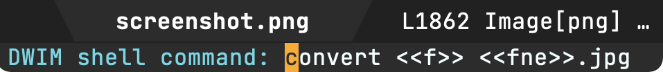
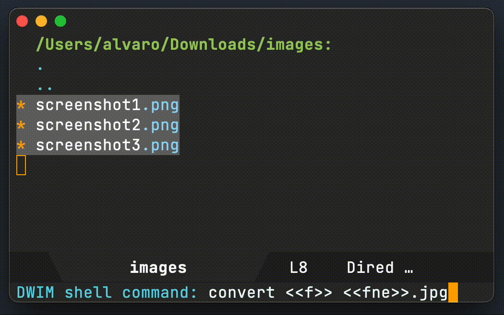
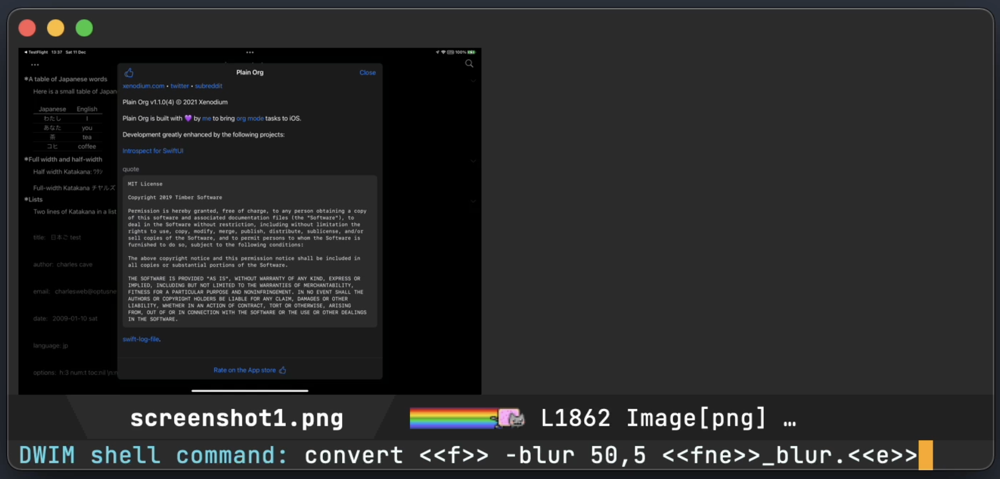
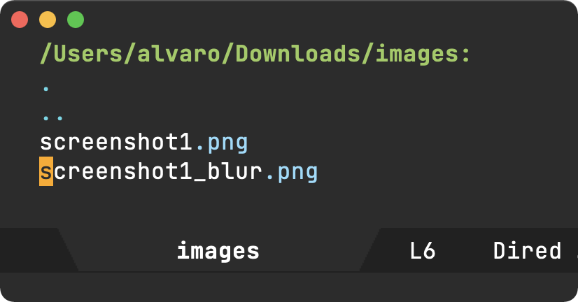
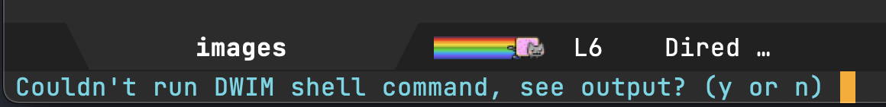
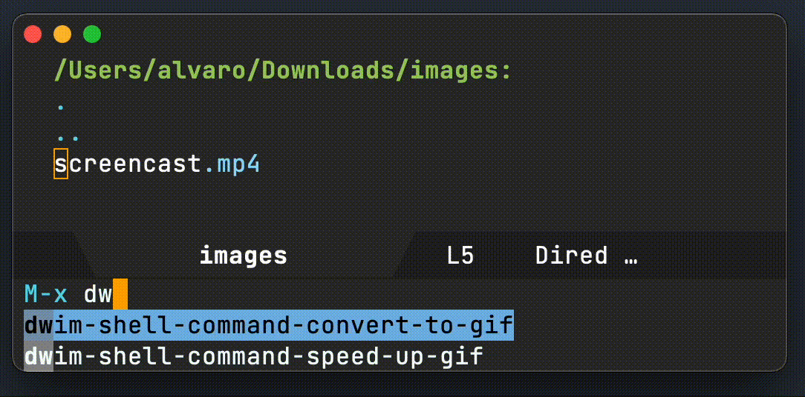

Álvaro Ramírez
Emacs DWIM shell-command
UPDATE: dwim-shell-command is now available on melpa.
I've talked about DWIM before, where I bend Emacs to help me do what I mean. Emacs is also great for wrapping command-line one-liners with elisp, so I can quickly invoke commands without thinking too much about flags, arguments, etc.
I keep thinking the shell-command is ripe for plenty of enhancements using our DWIM fairydust.
Do what I mean how?
Smart template instantiation
I've drawn inspiration from dired-do-shell-command, which substitutes special characters like * and ? with marked files. I'm also drawing inspiration from org babel's noweb syntax to substitute <<f>> (file path), <<fne>> (file path without extension), and <<e>> (extension). My initial preference was to use something like $f, $fne, and $e, but felt they clashed with shell variables.

Operate on dired marked files
This is DWIM, so if we're visiting a dired buffer, the shell command should operate on all the marked files.

Operate on current buffer file
Similarly, if visiting a buffer with an associated file, operate on that file instead.

Automatically take me to created files
Did the command create a new file in the current directory? Take me to it, right away.

Show me output on error
I'm not usually interested in the command output when generating new files, unless there was an error of course. Offer to show it.

Show me output if no new files
Not all commands generate new files, so automatically show me the output for these instances.

Make it easy to create utilities
ffmpeg is awesome, but man I can never remember all the flags and arguments. I may as well wrap commands like these in a convenient elisp function and invoke via execute-extended-command, or my favorite counsel-M-x (with completion), bound to the vital M-x.
All those gifs you see in this post were created with dwim-shell-command-convert-to-gif, powered by the same elisp magic.
(defun dwim-shell-command-convert-to-gif () "Convert all marked videos to optimized gif(s)." (interactive) (dwim-shell-command--on-marked-files "Convert to gif" "ffmpeg -loglevel quiet -stats -y -i <<f>> -pix_fmt rgb24 -r 15 <<fne>>.gif" :utils "ffmpeg"))

This makes wrapping one-liners a breeze, so let's do some more…
(defun dwim-shell-command-convert-audio-to-mp3 () "Convert all marked audio to mp3(s)." (interactive) (dwim-shell-command-on-marked-files "Convert to mp3" "ffmpeg -stats -n -i '<<f>>' -acodec libmp3lame '<<fne>>.mp3'" :utils "ffmpeg")) (defun dwim-shell-command-convert-image-to-jpg () "Convert all marked images to jpg(s)." (interactive) (dwim-shell-command-on-marked-files "Convert to jpg" "convert -verbose '<<f>>' '<<fne>>.jpg'" :utils "convert")) (defun dwim-shell-command-drop-video-audio () "Drop audio from all marked videos." (interactive) (dwim-shell-command-on-marked-files "Drop audio" "ffmpeg -i '<<f>>' -c copy -an '<<fne>>_no_audio.<<e>>'" :utils "ffmpeg"))
Make it spin ;)
Ok, not quite, but use Emacs's progress-reporter just for kicks.

Use it everywhere
dwim-shell-command covers my needs (so far anyway), so I'm binding it to existing bindings.
(use-package dwim-shell-command :bind ("M-!" . dwim-shell-command)) (use-package dired :bind (:map dired-mode-map ([remap dired-do-async-shell-command] . dwim-shell-command) ([remap dired-do-shell-command] . dwim-shell-command) ([remap dired-smart-shell-command] . dwim-shell-command)))
Bring those command line utilities
On the whole, this really changes things for me. I'll be more inclined to bring command line utilities to seamless Emacs usage. Take this recent Hacker News post on ocrmypdf as an example. Their cookbook has lots of examples that can be easily used via dwim-shell-command--on-marked-files. What command line utilities would you bring?
Where's the code?
UPDATE: dwim-shell-command is now available on melpa.
The code for dwim-shell-command.el is likely a bit rough still, but you can take a peak if interested. Keep in mind this is DWIM, tailored for what ✨I✨ mean. Some of the current behavior may not be your cup of tea, but this is Emacs. You can bend it to do what ✨you✨ mean. Happy Emacsing.